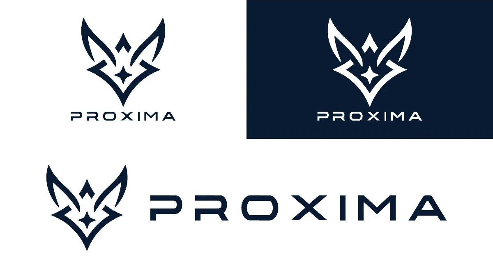
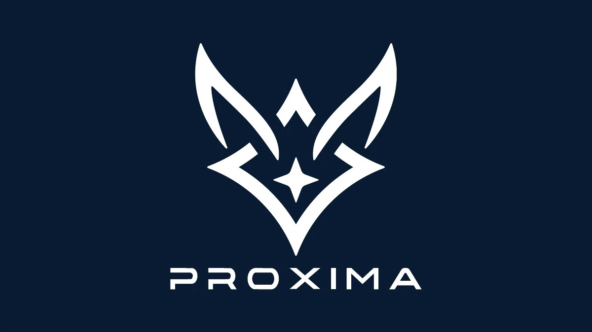
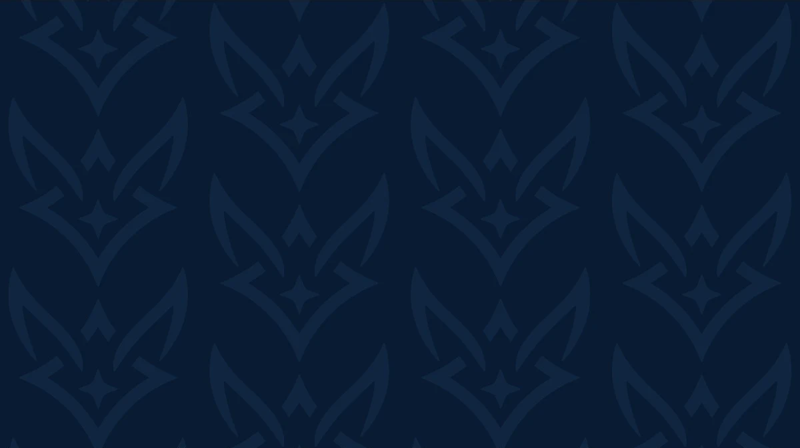
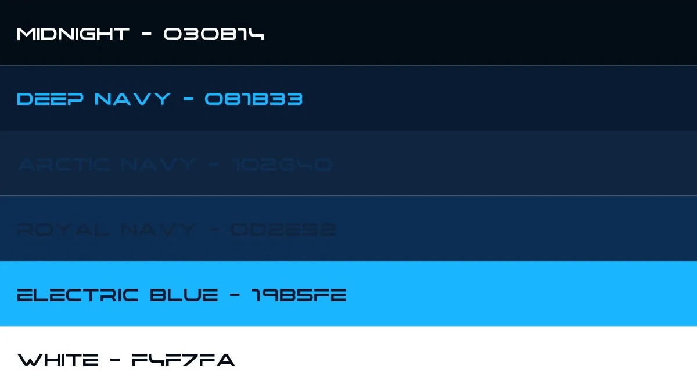
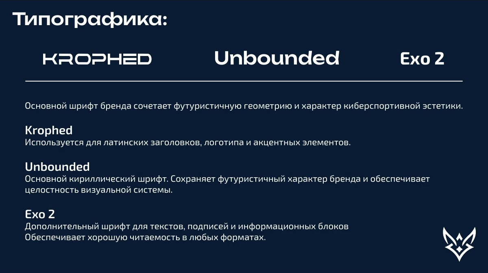
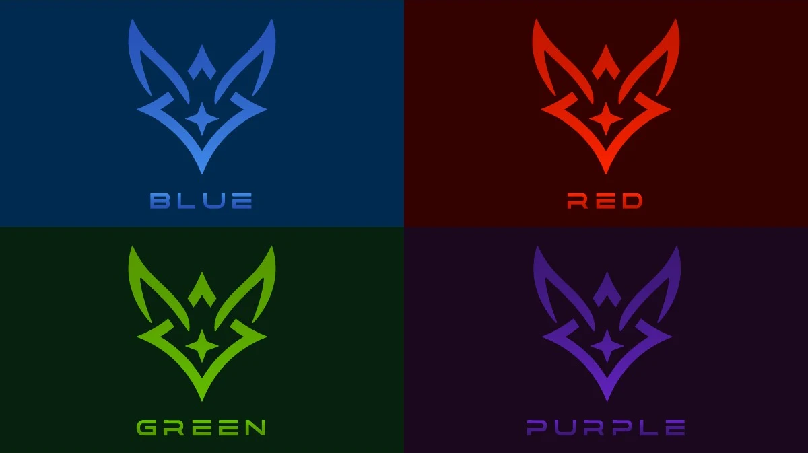
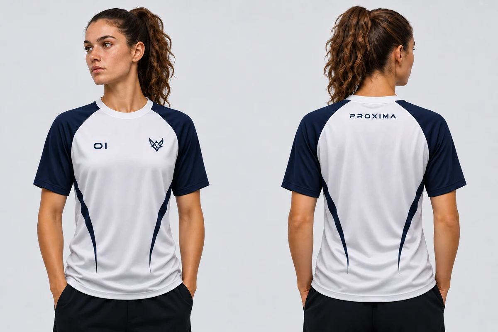
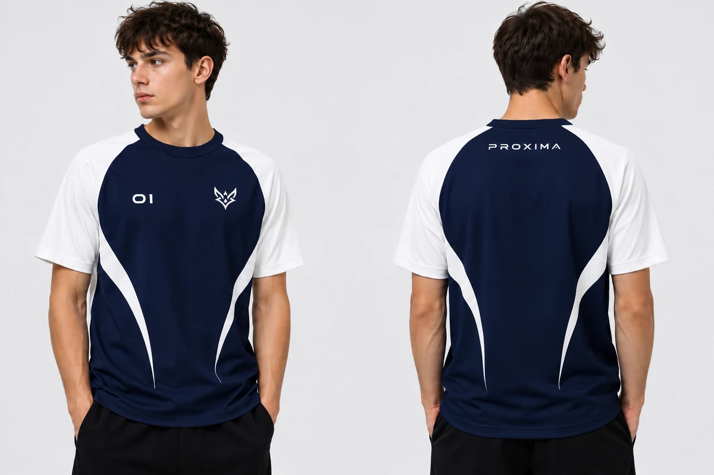

Логотип
Вертикальная и горизонтальная композиции, светлая и тёмная версии.

Айдентика и брендбук для гильдии World of Warcraft. Я разработал логотип, графическую систему и правила её применения.

Вертикальная и горизонтальная композиции, светлая и тёмная версии.

Повторяющийся знак формирует текстуру для фоновых композиций.

Глубокие синие оттенки, белый и акцентный Electric Blue.

Krophed для латинских акцентов, Unbounded для кириллицы и Exo 2 для текстов и подписей.


Две расцветки джерси Proxima. На груди — знак и номер, на спине — название команды.

